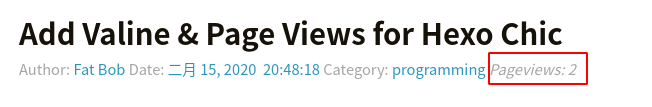

前言
Hexo Chic主题不自带评论系统。因为Valine提供匿名留言，所以今天折腾安装了一下。好辛苦阿。
Valine依赖leancloud，而LC需要实名认证。
参考资料
网上2篇很有参考价值的文章：
- hexo 博客添加评论和阅读量
千万要注意，这个代码样式把代码弄乱了！
折腾s我了！！！ - Valine评论系统
总结的步骤
我自己总结的步骤。
- 注册leancloud，获得对应的keys
- 修改主题配置文件
_config.yml
记得修改参数appid&appkey。
1 | # Valine评论系统（支持匿名） |
- 添加
/themes/Chic/layout/_plugins/valine.ejs
1 | <div id="vcomment" class="comment"></div> |
- 修改
/themes/Chic/layout/_page/post.ejs
在</article>前面添加可以可以了。
1 | <section class="post-nav"> |
- 重启应用
hexo g & hexo s
终于！一个下午的时间，你也可以通过留言系统跟网友交流拉！ :joy: :laughing:
添加阅读统计
效果图

- 修改
/themes/Chic/layout/_plugins/valine.ejs，添加参数visitor: "<%= theme.valine.visitor %>"
1 | <div id="vcomment" class="comment"></div> |
- 修改
/themes/Chic/layout/_page/post.ejs
<header class="post-header">
<h1 class="post-title"><%= page.title %></h1>
<% if(theme.post_meta_enable){ %>
<div class="post-meta">
<% if(theme.post_author_enable && config.author){ %>
Author: <a itemprop="author" rel="author" href="/"><%- config.author %></a>
<% } %>
<% if(page.date && theme.post_date_enable){ %>
<span class="post-time">
Date: <a href="#"><%- date(page.date, theme.date_format) %> <%- time(page.date, theme.time_format)%></a>
</span>
<% } %>
<% if(page.categories.length!==0 && theme.post_category_enable){ %>
<span class="post-category">
Category:
<% page.categories.forEach(item=>{ %>
<a href="<%- url_for(item.path) %>"><%- item.name %></a>
<% }) %>
</span>
<% } %>
<span id="<%- url_for(post.path) %>" class="leancloud_visitors view" data-flag-title="<%= post.title %>">
<em class="post-meta-item-text">Pageviews:</em>
<i class="leancloud-visitors-count">loading</i>
</span>
</div>
<% } %>
</header>
参考文章